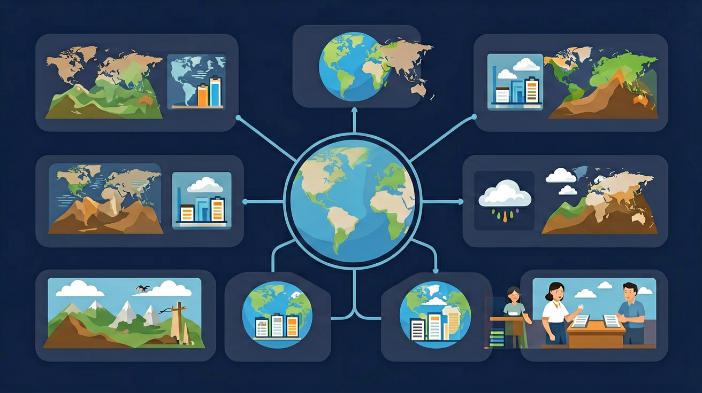

运用地图，描述中国的地理位置与疆域特征，说明南海诸岛是中国领土的组成部分，钓鱼岛及其附属岛屿是中国固有领土，增强国家版图意识与海洋权益意识。
❓ 为什么中国明明在亚洲东部，却说自己是‘中’国？
❓ 中国陆地面积世界第三，那第一第二是谁呀？
❓ 南海那些小岛离大陆那么远，为啥也算我们的？
学完这一课，这些问题你都能自信地回答。
🎯 能说出中国在世界的半球位置和海陆位置
🎯 能判断中国疆域四至点对应的省级行政区
🎯 能分析中国地理位置对经济发展的影响
中国最西端位于哪个省级行政区？
下列哪个国家不是中国的陆上邻国？
中国的地理位置与疆域是初中地理的重要内容。运用地图，描述中国的地理位置与疆域特征，说明南海诸岛是中国领土的组成部分，钓鱼岛及其附属岛屿是中国固有领土，增强国家版图意识与海洋权益意识。
运用中国行政区划图，识别34个省级行政区，记住它们的简称和行政中心。
中国位于亚欧大陆东部、太平洋西岸，海陆兼备。疆域辽阔，领陆、领水、领空构成领土。邻国众多，海岸线漫长。优越的位置对气候、交通、对外交往影响深远。
拖动缩放地图，点击城市标记查看气候或区域说明；可开河流图层对照。
1. 错误认为中国最南端是海南岛三亚。实际上最南端是南沙群岛的曾母暗沙（3°58'N），两者纬度相差近10°。学生常因旅游宣传和地图视觉焦点产生误解，需通过南海断续线地图和主权碑坐标数据强化认知。
2. 混淆"地理中心"与"几何中心"。新疆塔城地区的中国地理中心（83°36'E,46°14'N）是基于人口经济权重计算，而陕西泾阳的几何中心（108°55'E,34°32'N）是纯数学中点。学生容易忽视地理学中"重心"概念的复杂性。
3. 低估中国东西时差幅度。虽然全国统一使用北京时间（东八区），但新疆喀什（73°E）与黑龙江抚远（135°E）理论时差达4小时8分钟。学生常因统一时区政策忽略实际太阳时的差异，可通过日出时间对照表进行验证。
复制提示词到 AI 学伴，生成「中国的地理位置与疆域」的示意图或结构提纲；也可以上传你手绘的示意图，请 AI 学伴点评。
复制后可粘贴到 AI 学伴继续对话。
叙述位置按顺序：半球→大洲→与海洋关系→邻国与濒临海洋。结合地图指认。
常见误区：常见误区是把“国土面积大”与“位置优越”混为一谈，不会分层描述位置。
中国地理位置的突出优点之一是？
1. 国际物流路径优化：中欧班列选择满洲里（123°E）或阿拉山口（83°E）口岸时，需计算西部省区到不同口岸的运输半径。新疆出口货物经阿拉山口比满洲里缩短1200公里，这正是经度跨度大的直接应用。
2. 卫星导航校准：北斗系统在南海诸岛（最南至3°N）定位时，需特别调整电离层模型。曾母暗沙附近的定位误差可能达到赤道地区的1.8倍，这涉及纬度对GNSS信号的影响机制。
3. 气候农业决策：云南咖啡种植区（22°N）与海南橡胶园（18°N）的寒害预警阈值相差2℃，源于纬度带热量差异。农业部制定的《热带作物种植北界》直接运用了位置纬度数据。
1. 问题：若以胡焕庸线（黑河-腾冲线）为界，中国东南部面积占42%却承载94%人口，这与地理位置有何深层关联？引导：从季风区范围（大兴安岭-阴山-贺兰山连线）、海岸线长度（1.8万千米）、第三阶梯平原占比（12%）等角度，思考水热组合与人类活动的匹配度。
2. 问题：中俄边境黑龙江主航道中心线（129°E附近）与中哈边境巴尔鲁克山（82°E）相差47个经度，为何产生完全不同的界碑设置方式？引导：对比《尼布楚条约》与《中哈国界协定》签订时的测绘技术差异，思考经度跨度对边界划定的历史影响。
先要理解中国在世界的位置：北纬4°至53°N的纬度跨度带来从热带到寒温带9个温度带，73°E至135°E的经度跨度形成"东五区至东九区"的时区潜力。接着看疆域特征：陆地边界2.28万千米接壤14国，海岸线北起鸭绿江口（124°E）南至北仑河口（108°E），特别要注意南海断续线内200余个岛礁构成的海洋权益。最后落实到分析方法：用"四至点"坐标记忆法（如漠河北极村53°33'N），通过邻国接壤长度排序（俄罗斯最长4374千米）建立空间认知，结合地形三级阶梯理解海陆位置对降水的影响——东南季风携带的水汽到兰州（104°E）已衰减60%。典型案例如上海（121°E）与喀什（76°E）同在北纬31°附近，但年降水量相差10倍，这正是经度位置与海陆关系共同作用的结果。
关于中国的地理位置，以下说法正确的是？
请通过地图和资料，探究中国的地理位置、疆域范围及其与邻国的关系。
先独立作答，再点选项查看对错与错因。
中国最东端的位置是哪里？
下列哪个国家不是中国的陆地邻国？
中国的经纬度范围大致是？
中国的最西端位于____。
答案：新疆帕米尔高原
中国的最西端位于新疆帕米尔高原。
中国的陆地边界线总长度约为____公里。
答案：22000
中国的陆地边界线总长度约为22000公里。
（中考真题）当乌苏里江迎来日出时，帕米尔高原正值深夜，主要因为我国
若将海南岛与台湾岛位置互换，对两地气候影响正确的是
某跨境电商需凌晨3点与洛杉矶客户视频，主要考虑我国
✅ 最南实为立地暗沙（曾母暗沙以南）
💡 教材配图未更新南海新勘界成果
✅ 领海12海里，专属经济区200海里
💡 将经济权利与主权概念混同
口诀：东经北纬亚东岸，四至点连雄鸡冠
类比：中国像朝东侧坐的巨人，太平洋是面前的餐桌
复述本课两个核心概念的定义。
用本课方法分析一个新例子。
有同学认为：认为曾母暗沙是中国最南端 —— 请说明错在哪里。
有同学认为：混淆领海与专属经济区范围 —— 请说明错在哪里。
把还没弄明白的地方写下来问 AI 学伴。它会先帮你找到卡住的地方，再给你一个小小的提示，让你自己往前走一步。